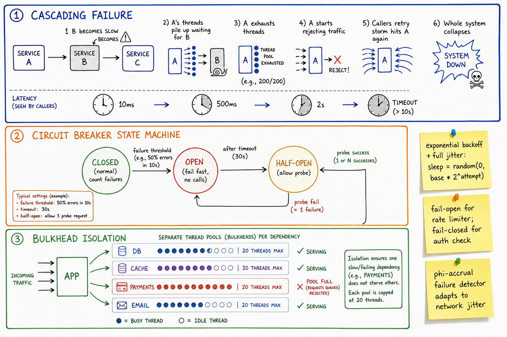

Failure Modes & Fault Tolerance // Concept
Parts of the system will fail. The interesting question is how it fails, how fast you detect it, and how much of the system goes down with it. Detect, isolate, recover, degrade.

Three panels: cascading failure (slow B exhausts A's threads, retry storm hits A, system down); circuit breaker state machine (CLOSED ↔ OPEN ↔ HALF-OPEN); bulkhead isolation (per-dependency thread pools).
01 — The Problem
Every dependency is a future outage. Networks partition, disks fill, GC pauses, deploys go wrong, dependencies get DDoS'd. The system can't prevent failure — it can only choose how it fails. A well-designed system degrades gracefully; a badly-designed one takes a one-pod hiccup and turns it into a region-wide outage.
Werner Vogels: "Everything fails, all the time."
02 — Core Vocabulary
| Term | Meaning |
|---|---|
| Crash failure | Process dies, stops responding. Cleanest case. |
| Omission failure | Request lost / response lost. No symptom on sender. |
| Byzantine failure | Arbitrary, including malicious behavior. Rare outside adversarial systems. |
| Gray failure | Node is "up" but slow / dropping packets / 1% errors. Worst kind — health checks pass. |
| Network partition | Some nodes can't reach others. Split. |
| Split brain | Both sides of a partition think they're primary. |
| Fail-stop | Failed nodes stop, observable. Easier reasoning. |
| Fail-fast | Return error immediately when downstream broken (vs hang). |
| Fail-open / fail-closed | On dependency failure, allow or deny by default. |
| MTTR | Mean Time To Recover. The number that defines reliability felt by users. |
| Blast radius | How many users / how much functionality a single failure affects. |
03 — Kinds of Failure
| Failure | Example | Defense |
|---|---|---|
| Crash | Pod OOM, kernel panic | Replication + health checks + restart |
| Slow node (gray) | GC pause, noisy neighbor, slow disk | Hedged requests, deadline budgets, ejection on latency |
| Network partition | Switch dies, AZ link saturated | Quorum-based consensus, partition tolerance design (CAP) |
| Correlated failure | Bad config push, bad deploy, cert expiry | Canary deploy, blue-green, cert monitoring |
| Capacity | Traffic surge, hot key | Autoscaling, rate limiting, shedding |
| Dependency failure | Downstream API 5xx, DB slow | Circuit breaker, bulkhead, fallback |
| Data corruption | Bit flip, bug-introduced bad state | Checksums, backups, audit log, idempotency |
04 — Detection
- Health checks — liveness (am I alive?) vs readiness (can I serve?). Liveness probe restarts; readiness probe pulls from LB.
- Heartbeats with timeout — simple but tuning the threshold is painful.
- Phi-accrual failure detector — computes a continuous φ score from heartbeat inter-arrival times; adapts to network jitter. Used by Cassandra, Akka.
- Latency-based — eject hosts above p99 from the LB pool (outlier ejection in Envoy).
- Synthetic monitoring — canary requests from outside; catches "all green but actual user calls fail" gray failures.
MTTR floor = detection latency + decision latency + propagation latency. If detection takes 5 min, MTTR ≥ 5 min — before you even act.
05 — Cascading Failures
Anatomy of a cascade (the canonical case):
1. Service B becomes slow (GC pause, slow query, ...)
2. Service A holds requests open waiting for B
3. A's thread pool fills up
4. A starts rejecting / timing out new requests
5. Callers see errors -> RETRY
6. Retries amplify load on A
7. A's CPU + memory spike from queued requests
8. A becomes the bottleneck. Now its callers see what A saw with B.
9. Whole system goes down.
The hidden actor is RETRY AMPLIFICATION:
one failed call -> 3 retries each layer
4 layers deep -> 81× original load when things start failing
Defenses
- Bound concurrency — bulkheads cap per-dependency in-flight requests
- Fail fast when dependencies are sick — circuit breaker
- Bounded retries with exponential backoff + jitter
- Retry budgets — total retries ≤ X% of original requests (Envoy supports this)
- Load shedding — drop low-priority requests under saturation
06 — Retries: When They Hurt
Naive retry: try, fail, try again immediately. -> 10,000 clients all retry at the same instant on a transient hiccup -> thundering herd, system never recovers Fix: exponential backoff with FULL JITTER sleep = random(0, base * 2^attempt) attempt 1: random(0, 100ms) attempt 2: random(0, 200ms) attempt 3: random(0, 400ms) attempt 4: random(0, 800ms) attempt 5: random(0, 1600ms) Why full jitter (not "decorrelated jitter" or "equal jitter")? -> spreads retries evenly; AWS Architecture Blog measured it best. Bound attempts: 3-5 max. After that -> DLQ or surface the error.
See Backpressure & Rate Limiting for the deeper treatment.
07 — Circuit Breaker
State machine wrapped around every outbound dependency:
CLOSED (normal operation)
-> count failures over window
-> if ≥ threshold (e.g. 50% errors in 10s) -> OPEN
OPEN (fail fast, no calls)
-> return failure immediately to caller
-> after timeout (e.g. 30s) -> HALF-OPEN
HALF-OPEN (probe)
-> allow 1 (or a few) probe requests
-> success -> CLOSED
-> failure -> OPEN with backoff
Why it helps: when downstream is sick, calling it just makes it sicker. Open the breaker, fail fast, give it room to recover. Callers get errors faster (good) and downstream isn't smashed (also good).
Implementations: Hystrix (Netflix, archived), Resilience4j (JVM), Polly (.NET), built into Envoy, Linkerd.
08 — Bulkheads
From shipbuilding: compartmentalised hulls so one breach doesn't sink the ship. In software: isolated resource pools per dependency so one bad downstream can't starve everyone else.
app process: thread pool for DB (max 20) thread pool for cache (max 20) thread pool for payments (max 20) thread pool for email (max 20) -> payments is on fire, queues up, exhausts its 20 threads -> DB / cache / email continue serving normally -> app degrades, doesn't die
Variants: thread-pool isolation (Hystrix style), semaphore isolation (lighter), per-connection-pool sizing.
09 — Timeout / Deadline Propagation
BAD: each hop has independent timeouts Client (10s) -> API (10s) -> Service A (10s) -> Service B (10s) Client already gave up at 10s, but A is still calling B -> wasted work, no caller will see the result GOOD: deadline propagation Client sets deadline = now + 10s API receives deadline header, passes to A (now has 9.5s left) A passes to B (now has 9s left) Each layer aborts when its budget runs out -> gRPC has this built in via deadline metadata -> HTTP: use a header like x-deadline-ms or trace baggage
Without deadline propagation, retries multiply timeouts. With it, total work is bounded and matches user patience.
10 — Fail-Open vs Fail-Closed
| Dependency | Choice | Why |
|---|---|---|
| Rate limiter | Fail-open (allow) | Better to let traffic through than block everyone because Redis is down |
| Auth check | Fail-closed (deny) | Letting anyone in is worse than locking out legit users briefly |
| Feature flag | Fail-closed to default value | Keep old behavior if flag service is down |
| Recommendation service | Fail-open with empty/cached recs | Page renders without recs — better than 500 |
| Payment authorize | Fail-closed | Don't ship goods unpaid |
| Fraud check | Domain choice | Big merchants fail-open (revenue); small ones fail-closed (risk) |
The interview cue: "When this dependency fails, which is worse — saying yes when we should have said no, or saying no when we should have said yes?"
11 — Chaos Engineering
Netflix Simian Army (2010s) made this mainstream. The premise: failures you don't regularly exercise are failures you can't recover from.
- Chaos Monkey — randomly kills instances in production
- Chaos Gorilla — takes down an entire AZ
- Chaos Kong — takes down an entire region
- Latency Monkey — injects 1-5s latency on random calls
- Game days — scheduled, supervised destruction
Modern tools: Gremlin, AWS Fault Injection Simulator, LitmusChaos, Chaos Mesh (k8s-native). Start small — non-prod, single service — before going prod-wide.
12 — Where It Shows Up
| System | Angle |
|---|---|
| Job Scheduler | Retry strategy + DLQ; at-least-once with idempotency |
| Rate Limiter | Fail-open semantic; degraded but never blocking |
| Uber | Regional outage handling; ride flow degradation modes |
| Payment System | Webhook retries with exponential backoff; idempotency keys |
| Backpressure | Same family — failure prevention via pushback |
| Service Mesh | Mesh ships circuit-breaking, retry budgets, outlier ejection |
| Observability | You can't fix what you can't detect |
13 — Pitfalls
- Unbounded retries — classic cascade amplifier. Always cap.
- Retries without jitter — thundering herd on recovery.
- Health check that always returns 200 — tests web framework, not dependencies. Make readiness reflect the real dependency state.
- Same thread pool for everything — one bad dependency = whole app dies. Bulkhead.
- Auto-failover triggered by flaky health check — flips. Require sustained failure + human confirmation for big-blast actions.
- Tight coupling of "alive" and "ready" — long warm-up time means the orchestrator keeps restarting healthy pods.
- Same timeout on every hop — no deadline propagation, wasted downstream work.
- Fail-open auth check — security catastrophe.
- Untested DR plan — the plan that's never exercised doesn't work. Game days.
14 — Interview Q&A
Walk me through a cascading failure.
Why do retries make things worse?
Explain the circuit breaker state machine.
What's a bulkhead and where does it help?
When would you fail-open vs fail-closed?
What's deadline propagation and why does it matter?
How would you detect a slow node (gray failure)?
What is exponential backoff with full jitter?
How does chaos engineering reduce risk?
What's split brain and how do you prevent it?
What's the difference between liveness and readiness probes?
SDE-2 vs SDE-3 differentiator?
| SDE-2 | SDE-3 |
|---|---|
| Retries with backoff, circuit breaker, timeouts | + retry-amplification math, full-jitter rationale, bulkhead pattern, retry budgets, deadline propagation, fail-open vs fail-closed framing, gray-failure detection (outlier ejection, phi-accrual), MTTR economics, chaos engineering, fencing tokens for split brain, liveness vs readiness |